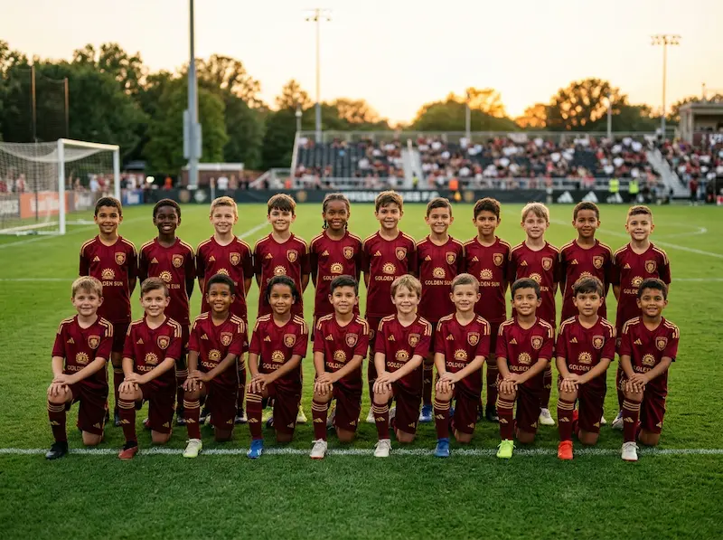
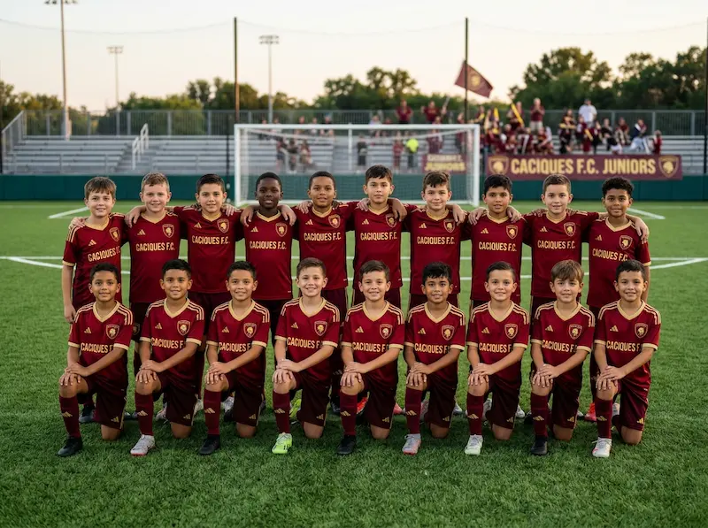
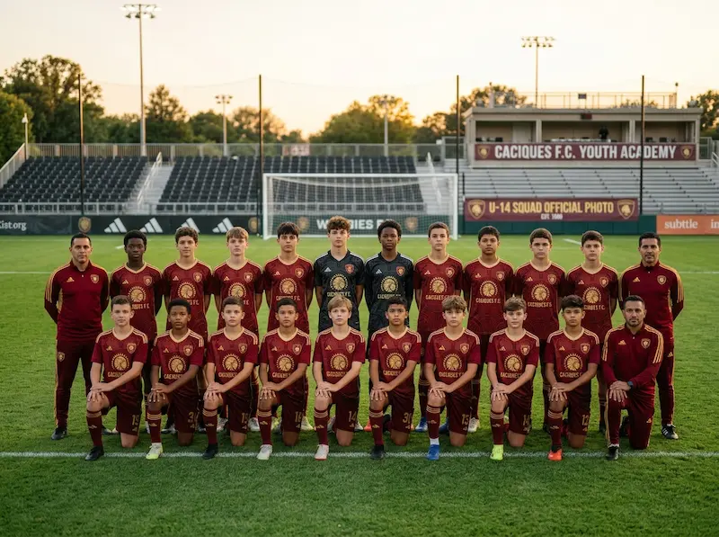
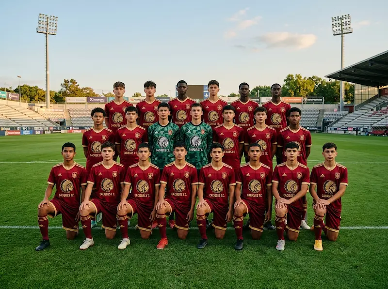
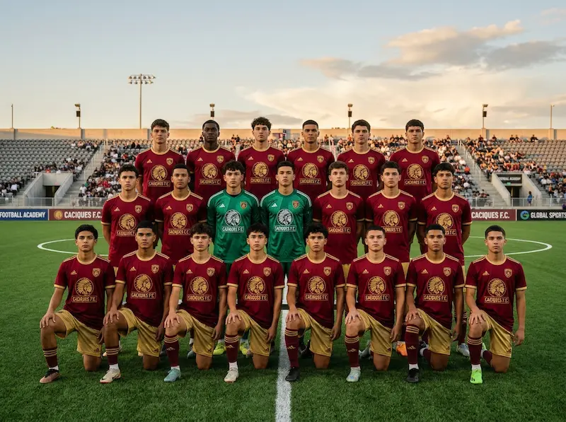

Crecer etapa a etapa
Nuestros equipos
En Caciques F.C. acompañamos a nuestros jugadores en cada etapa de su formación. Estas son las categorías del club, desde Benjamín hasta Juvenil:

Benjamín
Una etapa para disfrutar del fútbol, familiarizarse con el balón y aprender los fundamentos del juego en equipo.

Alevín
Los jugadores afianzan su técnica, mejoran la coordinación y empiezan a reconocer distintas situaciones de juego.

Infantil
Se trabajan la toma de decisiones, la colaboración y la aplicación de conceptos tácticos en los entrenamientos y partidos.

Cadete
Una fase para desarrollar la autonomía, consolidar habilidades y asumir nuevos retos dentro del equipo.

Juvenil
Los futbolistas profundizan en el juego colectivo y continúan su desarrollo deportivo con compromiso y responsabilidad.